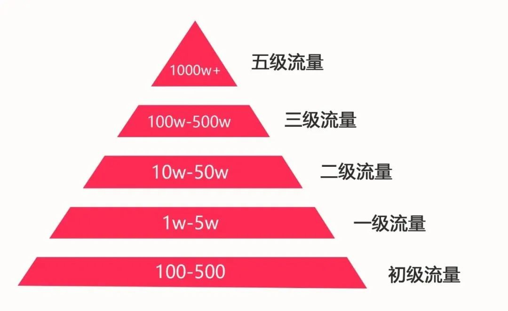
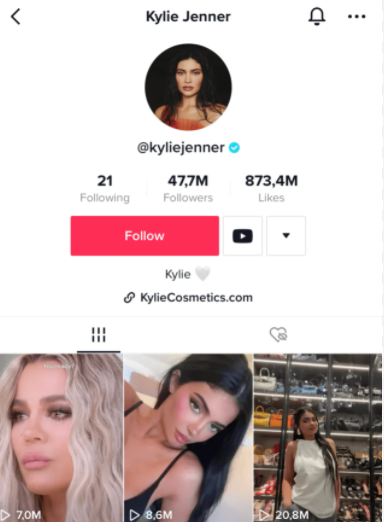

🕓2024年11月10日
VPS搭建Tiktok原生IP视频教程：▶https://youtu.be/LlryQejVWTU
一、Tiktok为什么要养号?
在回答这个问题之前，我们首先要明白TikTok智能推荐机制，也就是著名TikTok算法。

每个创作者发布视频时，TiKToK都会根据视频内容、视频发布地区、标题内容进行特征识别，来判断视频可能会有哪些人群喜欢，并且慢慢打上标签，然后再把视频推送给对应标签的兴趣人群。
在一个账号刚刚创立的时候，是没有任何标签的。
养号的目的就在于此:通过养号，获得一个清晰的标签定位，标签越清晰，平台对你的账号推流就会越精准，从而推高以后视频的播放量，账号就能逐步做起来了。
那么，tiktok根据哪些维度来检测账户是不是正常运行的呢?
答案是TikToK会利用算法检测你的完播率、follow、喜好、转赞评、留存率等行为来判断你账号是不是一个正常的个人行为。
TikTok的推荐机制就是每个账号每周推5-10个视频，刚发一开始冲一冲可以破500+流量，连续发几天下滑几十是正常，不必焦虑。
权重和账号的垂直方向相关，tiktok平台的算法需要知道你对什么垂直方向的内容感兴趣，才能在养号时提高你在这个垂直方向上的账号权重， 就比如如果你要做宠物方向的内容，那前期的养号就是为了提高账号宠物相关的权重。
一、Tiktok什么时候需要养号?
1、刚注册的新tiktok账号，直接开养。如果运营过程中账号出现了被降权或者被处罚现象，那就没必要养了。(再起一个新号远比你去抓救老号的成本低)
2、注册好久的老tiktok账号，也就是僵尸号，意思是只看热闹，不点赞，不评论、不转发和不关注，现在开始养号。(参考第4步养号步骤开始养号)
3、收到tiktok官方的警告和降权的号，由于刚开始创建的账号直接开广告，然后被关小黑屋了。(一般这种我直接换号)
4、新账号发了10个视频，播放量都低于1008，也没有被tiktok警告的低权重账号(自己,感觉良好的视频，结果市场不欢迎)，这样的号也要开始重新养号了。

无论新手还是老鸟，养号都是起号的必经之路！！！
二、Tiktok 怎么养号？
由于现在tiktok平台对新账号的限制，刚注册好的新号是不能直接关注点赞的，根据我们的经验，像比较难的美区，需要1-2天时间养号。 但这里的不能关注点赞，只是针对账号而言，也就是说，你不能关注点赞别人，但你可以收藏视频、标签、音乐，这三个就足够我们进行前期的养号了。
1、搜索收藏标签
确定你要做的方向，根好5-10个相关性非常强的关键词，在搜索框搜索，拉到最右侧的标签(Hashtags)，收藏，但要控制好频率，别一上来就收藏20-30个。
比如我是做宠物方向的，我想到的一个关键词是哈士奇，那我一开始会关注前3-5个推荐的标签。前面几天都要重复这个动作，这时候tiktok的算法会在 For You 页面，开始给你推荐宠物相关的视频。
2、收藏背景音乐
接下来，当你在for you页面看到宠物方向的相关视频时，虽然现在还不能点赞关注账号和视频，但你可以点开这些爆品视频的背景音乐，进行收藏。
3、点赞收藏评论作品+关注他人账号
就按这样的两个步骤，收藏垂直方向的标签和背景音乐，按照我们的经验，一天后基本上你的for you页面，有50%的内容都是和你想做的方向相关，
而且，基本到这个时候，你的账号已经可以开始点赞收藏评论和关注别人了，那你还等什么，开始在foryou页面剧视频，看到相关的作品就收藏+关注账号，看到不相关的立刻划走或是直接刷新。
不过上面的两个步骤也别停，但要注意操作频率。
保持账号正常活跃度，每天至少要花半小时到一个半小时刷for you的推荐视频，可以分时间段去刷，不必一次性刷够时间。
这样来回养个2-3天，你账号的垂直度权重应该算是ok了。
当然，如果你熟练的话，第一天就能养好号，但这个还是有点玄学的。
三、如何判断养号成功?
当你的for you页面，有90%的视频都是和你的方向相关时;
当你已经能够正常关注每一个账号，点赞收藏评论每一个视频作品时,
你就可以开始准备发第一个视频了。
现在要做的另外一件事，就是把账号转化为专业账号(Pro Account)，方便之后视频作品的数据分析。
四、Tiktok前期养号的细节事项
1、一机一号一节点
新注册的账号一机一号一节点，运营周期超过一个月或者一定粉丝量的基础之上，可以在同一设备增加其他账号同时运营。
后期，一台手机，最多三个账号，一个节点最多三个设备，不要频繁更换节点，更不要短时间内频繁更换节点。
2、不要频繁更换节点
不要频繁更换ip，更不要短时间内频繁更换ip，因为ip代表在网络中的一个位置，容易被tiktok标记你这台设备是有问题的，发布的视频可能就会被限流等等。
这也是为何尽量能自己搭建节点就自己搭建节点。
3、不要频繁更改账号信息
想要提高账号的权重，完善账号的基础信息是必不可少的。这些基础信息包含头像、昵称、签名等等
当然，如果你有国外社交媒体的账号比如Instagram、Facebook、YouTube等，可以进行绑定。
还有就是在账号注册之初填写资料时一定要完整，频繁的修改资料是非常忌讳的，如果实在必须修改那么也要分批次修改完成，而不是一次性对所有资料进行修改。
4、发布前五个视频的小建议